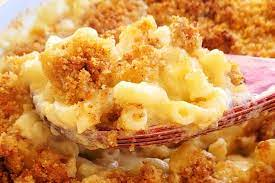

Homemade mac and cheese

Ingredients
- 16 ounces of whole wheat macaroni
- 2 tablespoons butter
- 2 and a half tablespoons all purpose flour
- 2 cups shredded low-fat Cheddar cheese
- half a cup grated parmesan cheese
- 3 cups low-fat(1%) milk
- 2 tablespoons butter
- half cup whole wheat bread crumbs
- 1 pinch paprika
Steps
- Preheat oven to 350 degrees F(175 degrees C). Bring a Large pot of lightly salted water to boil.
cook elbow macaroni in boiling water, stirring occasionally until cooked through but firm to the bite, 8 minutes. Drain
- Melt 2 tablespoons butter in a saucepan over medium heat. Stir in flour to make a roux.
Slowly add milk to roux, stirring constantly. Stir in cheedar and Parmesan cheeses and cook over low heat until cheese is meltednand sauce is thick,
about 3 minutes. Place macaroni in large baking dish and pour sauce over macaroni. Stir well
- Melt 2 tablespoons butter in a skillet over medium heat. Add breadcrumbs and stir until butter is absorbed, 2 to 3 minutes.
Spread over macaroni to cover sprinkle with paprika
- Bake in preheated oven until cheese sauce is hot and breadcrumbs are browned, about 30 minutes